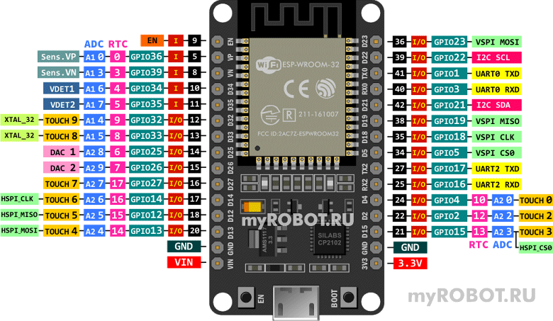

|
ГлавнаяВИКИМикроконтроллеры
ESP32 распиновка (pinout)
ESP32 DEVKIT V1
Плата ESP32 DEVKIT V1 имеет 30 выводов и использует контроллер ESP32 с микроконтроллерным ядром Tensilica Xtensa LX6. Серия является преемником микроконтроллеров ESP8266.

Описание и назначение выводов ESP32 DEVKIT V1
GND — общий провод, "земля"
5 .. 42 — номер пина на чипе ESP32
Выводы питания
VIN — контакт для подключения внешнего источника питания 5V (стабилизатор AMS1117-3.3 позволяет подавать питание в широком диапазоне от 5 до 10 V). Хотя стабилизатор допускает подачу более высокого напряжения (до 15 V), но без дополнительного охлаждения возможен перегрев микросхемы.
3.3V — контакт, на который подается выходное напряжение внутрисхемного стабилизатора. Может быть использован для питания подключаемых к плате датчиков.
I/O
I — контакты могут быть использованы только как входы.
I/O — контакты могут быть использованы как входы и выходы.
Выводы GPIO
GPIO (General Purpose Interput Output) — контакты ввода/вывода общего назначения. Могут быть сконфигурированы как входы или выходы и программно назначены на различные функции. Распиновка представлена на рисунке.
Абсолютный максимальный ток, потребляемый GPIO, составляет 40 мА в соответствии со спецификацией ESP32.
EN
EN (Chip Enable) — контакт включения ESP32 в рабочий режим, одновременно может быть задействован для перезапуска контроллера (Reset).
ADC
A1, A2 — выводы встроенного аналого-цифрового преобразователя (АЦП). Входные каналы АЦП имеют разрешение 12 бит. Преобразованные значения лежат в интервале 0 — 4095. Входной диапазон напряжений составляет от 0 до 3,3 В. Есть возможность установить разрешение каналов АЦП в коде, а также диапазон АЦП.
Контакты A2 не рекомендуется использовать при использовании Wi-Fi.
DAC
DAC — цифро-аналоговый преобразователь (ЦАП). На ESP32 имеются два 8-битных канала ЦАП для преобразования цифровых сигналов в аналоговые выходные сигналы напряжения.
UART
UART (Universal Asynchronous Receiver-Transmitter) — асинхронный последовательный интерфейс устанавливает связь с другими устройствами по шине UART. Каждая линия может быть переназначена пользователем на любой GPIO.
SPI
SPI (Serial Peripheral Interface) — последовательный периферийный интерфейс. ESP32 имеет два SPI (VSPI и HSPI) в ведущем и подчиненном режимах.
TOUCH
TOUCH — контакты ёмкостных сенсорных датчиков. Реагируют не изменение ёмкости в электрической цепи вывода, вызванное прикосновением пальца к соответствующему контакту. Эти контакты могут быть легко встроены в емкостные панели и заменять механические кнопки. TOUCH-контакты также могут служить источником пробуждения ESP32 из энергосберегающих режимов. Распиновка представлена на рисунке.
I2C
Интерфейс I2C — последовательная асимметричная шина. I2C используется для подключения датчиков и периферийных устройств.
RTC
RTC — ядро низкого энергопотребления.
ESP32 имеет сопроцессор с ультранизким энергопотреблением (Ultra Low Power — ULP). Выводы RTC GPIO, перенаправленные в подсистему с низким энергопотреблением, могут использоваться для выхода ESP32 из глубокого сна при работе сопроцессора (ULP). Требуют предварительной программной подготовки.
VDET
VDET — аналоговые контакты ядра низкого энергопотребления (RTC). По аналогии с цифровыми контактами, предназначены для вывода процессора ESP32 из режимов энергосбережения. Требуют предварительной программной подготовки.
XTAL_32
XTAL_32 — контакты внешнего кварцевого генератора с частотой 32.768 КГц.
Датчик Холла
Sens_VP (positive), Sens_VN (negative) — контакты встроенного датчика Холла, который обнаруживает изменения в магнитном поле в его окружении.
PWM (pulse-width modulation) — широтно-импульсная модуляция (ШИМ) управляет мощностью методом пульсирующего включения и выключения вывода. ESP32 имеет 16 независимых ШИМ-каналов. Практически все контакты, которые могут выступать в качестве выходов, могут использоваться в качестве выходов ШИМ (GPIO с 34 по 39 не могут генерировать ШИМ). Для генерации ШИМ-сигнала необходимо в программе задать частоту сигнала, скважность, ШИМ-канал, а также GPIO, на котором вы хотите вывести сигнал.
Onboard LED
Плата имеет встроенный светодиод. Он подключен к GPIO2.
Материалы по теме:
|
|
Размещение этой статьи на других сайтах как полностью, так и частично разрешено только после согласования с администрацией myROBOT.RU |
Просмотр - Правка - История - Печать - Недавние изменения - О Вики
Редакция от 17.12.2023 05:14
|